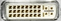

DVI (Optional)
 |
DVI-D dual-link connector for external monitor connection; see "Connecting a Monitor".
The connector is available as option R&S CMW-B620A.
 |
DVI-D dual-link connector for external monitor connection; see "Connecting a Monitor".
The connector is available as option R&S CMW-B620A.